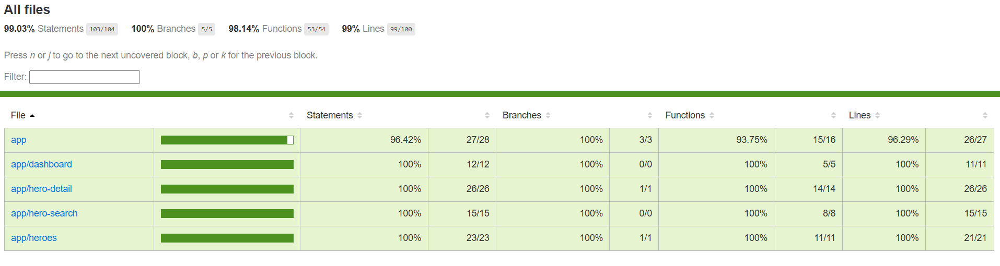

Тестирование Angular компонентов
"Была допущена ошибка пытаясь как можно скорее опубликовать первую версию библиотеки. Покрыв интеграционными тестами только ознакомительный проект в надежде, что этого будет достаточно для самой библиотеки, но из-за этого самая главная функция всей библиотеки runTasksUntilStable не работала как должна была."
—Я, предрелизный процесс для ngx-testbox
Содержание
Описание проблемы
В наши дни разработчики очень часто забывают либо специально не пишут тесты ради ускорения доставки продукта заказчику. Такой подход однозначно стоит свечь, но до тех пор пока разработка проходит на стадии MVP, всё что идёт далее обязательно должно покрываться тестами, если прибыль такое приложение будет приносить на средней или дальней дистанции.
Встречались ли вы когда-нибудь с проблемой, когда вы не знаете как долго надо ждать пока NG зона в приложении станет стабильной, все OnPush компоненты отрисуются, все запросы на сервер получат ответ, и все асинхронные операции выполнятся, даже те которые встанут в очередь как результат предыдущих асинхронных операций; и далее можно приступать к написанию expect стейтментов?
В этой инструкции я изложу подход, который показал себя очень хорошо на комплексных компонентах со сложной бизнес логикой. Данная статья предназначена для старших и среднего уровня экспертности разработчиков, т.к. я не планирую рассматривать плюсы или минусы большинства общих утверждений в данной статье.
Прежде всего я хочу обозначить рамки, в которых мы будем существовать для наиболее эффективного достижения цели. Прошу вас ознакомится с ними, т.к. не всем командам разработки они могут подойти, дабы не тратить ваше время, если вы не захотите работать в предложенных мною ограничениях.
В описании я буду использовать библиотеку, которую я написал для ускорения процесса и удобства тестирования компонентов, которая берёт на себя ответственность по выполнению всех асинхронных задач по стабилизации NG Zone в тестовом окружении.
Юнит тестирование отдельных функций и сервисов и e2e приложения данный подход не покрывает. Вы можете использовать любое другое направление для юнит и e2e тестирования, они никак не помешают работе предложенного подхода.
Итак, приступим.
Бизнес и технические требования
- Метод написания тестов должен быть максимально схож с поведением пользователя.
- Функциональные требования тестируются через Acceptance Criteria ваших пользовательских историй. Другими словами, Acceptance Criteria = Написанный тест кейс.
- Angular приложение должно иметь низкую зависимость от инфраструктуры проекта. При неработающих окружениях, Angular приложение остаётся самодостаточным в плане работоспособности написанных тестов.
- Функциональные требования тестируются через поведение элементов на странице и взаимодействие Angular приложения с сервером через Angular HTTP Client.
- Сайд эффекты не тестируются, если они не относятся к функциональным требованиям (используйте для них обычное unit тестирование). Сайд эффекты перетираем заглушками.
- Ошибки написания тестов вызванные человеческим фактором должны быть минимизированы.
- Написанные тесты отвязаны от имплементации кода.
- Expect стейтменты пишутся исключительно для NG Zone в статусе stable.
- Вы должны иметь управляемую организацию модулей (как варианты: FSD; ваша собственная разработка; вложенные модули отражающие routing вашего проекта чем-то похожие на то как делает next.js; и т.п.), что позволит разделить код по ответственности, иметь управляемые сайд эффекты и избежать цикличных зависимостей.
- Необходимо отличное понимание того, что ожидает Angular приложение в ответах от сервера для написания теста, который покрывает определённый Acceptance Criteria.
- Требуется исполнение кода в браузере, но никак не в памяти, т.к. не все тестовые окружения в памяти имеют полный набор браузерного API. Дополнительно запуск в браузере вам будет удобен для демонстраций и дебаггинга.
Следствия
- Фейковые функции существуют для того, чтобы создать заглушки для сайд эффектов.
- Тестируются только компоненты. Сервисы и сопутствующие классы тестируются как часть интеграционного тестирования компонентов.
- Компоненты тестируются по методу black-box тестирования. Мы не тестируем структуру кода и значения переменных, только входные параметры и промежуточные/выходные результаты.
Положительные эффекты
- Высокий уровень покрытия тестами.
- Написанные тесты не связаны с имплементацией. При изменении кода тесты остаются актуальными.
- Тесты покрывают актуальные функциональные требования, а не просто показывают высокий процент покрытия для галочки.
- Снижен фактор человеческой ошибки при написании фейковых функций и описании тест кейса.
- Можем писать компоненты без работающего бэкенда, но если примерные контракты уже известны.
- Легче перейти на TDD.
- Скорость выполнения тестов выше чем при e2e.
- Надёжность тестов даёт больше гарантий чем при unit тестировании.
Негативные эффекты
- Такой подход может быть головной болью для начинающих разработчиков, т.к. работа с данным подходом требует понимание “от и до” функциональных требований, и того как они перекликаются с ответами от сервера, которые им придётся симулировать. Как следствие скорость разработки может сильно просесть, если команда по большей части состоит из начинающих разработчиков.
- Скорость разработки просядет на краткосрочной перспективе до момента осознания нового подхода. Полная адаптация должна занять от месяца до двух у миддл разработчика при активной работе над тестами.
- В отчётах некоторый код может отображаться ложно покрытым, если вы не писали для этого участка кода специального тест кейса.
Теория
В моём понимании юнит тестирование компонентов/acceptance criteria является крайне не оправданной попыткой достижения высокого покрытия, т.к. на дистанции такой метод больше мешает и не гарантирует покрытия тестами пользовательских историй. Тестирование e2e добавляет больше зависимостей к работоспособности тестов, вследствие чего, тесты не всегда и не везде могут оказаться работоспособными. Поэтому, здесь я расскажу о интеграционном black-box тестировании, используя ngx-testbox библиотеку, на примере ознакомительного проекта от Angular - Tour of Heroes. Цитата после главного заголовка отражает, что каждый тип тестирования хорошо справляется с тем для чего он был разработан. Unit и e2e тестирование отлично подходят для других нужд, а для тестирования Acceptance Criteria идеальным вариантом я считаю именно интеграционное тестирование компонентов.
Первое с чего я начну теоретическую часть так это с описания особенностей работы с библиотекой:
- Библиотека берёт на себя заботу по обработке операций в очереди и ответам на HTTP запросы на основе предоставленных инструкций HTTP вызовов.
- Все тесты выполняются в fakeAsync зоне. Это даёт возможность гибко управлять временем и задачами в очереди.
- Для того чтобы запустить исполнение задач в зоне используется функция runTasksUntilStable.
- Инструкции для ответов с сервера задаются через интерфейс HttpCallInstruction и затем передаются аргументом в runTasksUntilStable
- Все инструкции для HTTP вызовов являются обязательными к вызову внутри одного вызова функции runTasksUntilStable
- Любой необработанный HTTP запрос, который попал в Angular HTTP Client вызовет ошибку. Исключением из правила являются отменённые запросы, они будут проигнорированы.
- Библиотека предоставляет базовый класс Harness для работы с DOM элементами: квери, фокус, клик и получение текстового контента.
- Harness класс работает в связке с тестовым атрибутом, по-умолчанию data-test-id.
- По примеру, вы можете сгенерировать тестовые id для назначения их DOM элементам, которые будут поддерживаться вашей IDE для удобства использования.
- Работа только через REST API (Websocket и RPC на стадии исследования).
Есть несколько шагов, которые помогают ещё больше избавится от неопределённости при работе в команде над пользовательскими историями. Они необязательны, но я рекомендую их как проверенный путь к решению поставленных задач в команде:
- Никогда не приступайте к написанию кода сразу как только вы получили задачу. Прочитайте описание задачи. Отдышитесь. Сходите попейте чай.
- Пока пьёте чай, подумайте, кто заинтересован в конечном результате вашей задачи и/или будет принимать выполненный результат. Это может быть тимлид, продукт овнер, бизнес аналитик, ваш коллега бэкенд разработчик, или кто-то ещё. Создайте чат и добавьте этих людей в чат, назовите его “3 Амиго. № и название вашей задачи”. Обязательно добавить QA инженера, кто будет проверять вашу задачу перед отправкой на подтверждение. Желательно добавить дизайнера, кто работал над макетами к вашей задаче.
- Сперва задайте в чате простой вопрос “Готова ли задача для написания под неё кода, либо необходимы дополнительные исследования?”. И ещё раз утвердите Acceptance Criteria, которые прописаны в задаче. Если ранее вы не задавали таких вопросов, то можете заметить как некоторая часть задач будет автоматически выполняться или откладываться до выяснения обстоятельств, что играет вам на руку, так как вы не хотите делать бесполезную работу.
- Как разработчик, соберите свои собственные наблюдения, беря в учёт знания по вашей кодовой базе. На их основе напишите свои собственные Acceptance Criteria. Если они отличаются, а скорее всего они будут отличаться, от прописанных в самой задаче, отправьте их на ревью для ваших Амиго. Вы, как опытный специалист, заметите, что в задаче не упоминаются пути обработки исключений или дизайн макеты не имеют макета для состояния загрузки, и т.п. И снова утвердите Acceptance Criteria с вашими Амиго.
- После коммуникации с командой, у вас на руках должен быть утверждённый список Acceptance Criteria, который вы будете покрывать тестами.
- Поздравляю, вы готовы писать код!
Tour of Heroes
Весь исходный код вы можете найти в репозитории по ссылке ngx-testbox
Сейчас нам придётся заниматься реверс инжинирингом и из готового проекта собирать тест кейсы. Я вижу 4 компонента, где каждый может являться отдельной пользовательской историей:
- dashboard
- hero-detail
- hero-search
- Heroes
Возможные Acceptance Criteria для каждой истории
Dashboard:
- should display "Top Heroes" in the title
- should show heroes when server responds with heroes
- should not show any heroes if server responds with error
- should display hero name for each hero
- should create correct detail link for each hero
Hero-detail:
- should display hero details when hero is loaded
- should not display hero details when hero fails to load
- should allow editing the hero name
- should save hero and navigate back when save button is clicked
- should not navigate back when save fails
- should navigate back when go back button is clicked
Hero-search:
- should have empty search box initially
- should have no search results initially
- should show heroes when search term matches hero names
- should show no heroes when search term is an empty string or string of spaces
- should not show any heroes if search term does not match any hero names
- should not show any heroes if search returns an error
- should create correct detail link for each hero in search results
Heroes:
- should show all heroes when server responds with heroes
- should not show any heroes if server responds with an error
- should display hero id and name for each hero
- should create correct detail link for each hero
- should add new hero when valid name is entered
- should not add hero when invalid name is provided
- should not add hero when server responds with error
- should clear input field after adding hero
- should remove hero from list when delete button is clicked
- should not remove hero from list if server responds with error
Чеклист действий для подготовки тестового окружения
- Созданы тестовые идентификаторы
- Тестовые идентификаторы применены к элементам в разметке
- Создан Harness класс компонента, который наследуется от базового Harness класса
- Тестовые идентификаторы переданы аргументом в базовый класс
- Запуск алгоритмов происходит начиная с этапа NgOnInit.
Практика
Далее на примерах с кодом я опишу, как выглядит подготовка.
Шаг 1. Создаём тестовые идентификаторы.Я создаю отдельный файл для testIds. Присваиваю переменной массив строк с обозначением неизменного типа через as const, далее создаю объект, где и ключом и значением является идентификатор используя статичный метод IdsToMap класса TestIdDirective.
// test-ids.ts
import {TestIdDirective} from 'ngx-testbox';
export const testIds = [
'title',
'nameInput',
'addButton',
'heroesList',
'heroItem',
'heroLink',
'heroDeleteButton',
'heroId',
'heroName',
] as const;
export const testIdMap = TestIdDirective.idsToMap(testIds);Этап не сложный. Импортируем директиву TestIdDirective и наш testIdMap, идём в разметку и применяем на всех элементах.
import {testIdMap} from "./test-ids";
import {TestIdDirective} from 'ngx-testbox';
@Component({
selector: 'app-heroes',
templateUrl: './heroes.component.html',
imports: [
TestIdDirective
],
styleUrls: ['./heroes.component.css'],
changeDetection: ChangeDetectionStrategy.OnPush
})
export class HeroesComponent implements OnInit {
readonly testIds = testIdMap;
}<h2 [testboxTestId]="testIds.title">My Heroes</h2>
<div>
<label for="new-hero">Hero name: </label>
<input id="new-hero" [testboxTestId]="testIds.nameInput" #heroName />
<button type="button"
[testboxTestId]="testIds.addButton"
(click)="add(heroName.value); heroName.value=''">
Add hero
</button>
</div>
<ul [testboxTestId]="testIds.heroesList">
<li *ngFor="let hero of heroes" [testboxTestId]="testIds.heroItem">
<a routerLink="/detail/{{hero.id}}" [testboxTestId]="testIds.heroLink">
<span [testboxTestId]="testIds.heroId">{{hero.id}}</span>
<span [testboxTestId]="testIds.heroName">{{hero.name}}</span>
</a>
<button type="button"
[testboxTestId]="testIds.heroDeleteButton"
(click)="delete(hero)">
x
</button>
</li>
</ul>На этом шаге создаём класс, который упростит нам жизнь как разработчикам. С его помощью мы сможем легко искать элементы на странице, кликать и фокусироваться на них, извлекать текстовый контент. И всё это вызовом 1ой функции, которую ваш IDE должен вам помочь найти.
import {DebugElementHarness} from 'ngx-testbox/testing';
import {testIds} from './test-ids';
import {DebugElement} from '@angular/core';
export class HeroesHarness extends DebugElementHarness<typeof testIds> {
constructor(debugElement: DebugElement) {
super(debugElement, testIds);
}
}Этот шаг больше является рекомендацией чем призывом к действию.
Запуск алгоритмов происходит начиная с этапа NgOnInit. Исключение могут составлять инициализирующие строки кода в конструкторе, такие как присвоение статичных (readonly) значений полям класса. Это необходимо в случае того, чтобы перед запуском тест кейсов у нас была возможность замокать функции, иначе если вы запускаете алгоритмы в конструкторе, то такая возможность не всегда может представится далее.
Tour of Heroes
Предупреждаю, что этот ознакомительный проект может быть неоднороден. Мною были добавлены стратегии onPush, расставлены тестовые ID, и написаны spec файлы, остальная кодовая база идёт как есть.
Рассмотрим самые интересные тест кейсы. С проектом целиком вы можете ознакомиться по ссылке ngx-testbox.
Для первых тест кейсов возьмём простые 2 примера из компонента Heroes:
- should show all heroes when server responds with heroes
- should not show any heroes if server responds with an error
Откроем heroes.spec.ts файл.
Инициализируем переменные для Fixture и Harness компонента.
Сконфигурируем наш тестовый модуль через configureTestingModule.
Напишем функцию initComponent, которую будем вызывать внутри каждого тест кейса. Она будет ответственна за:
- Присвоение этим переменным значений.
- Получение инструкций для http запросов.
- Выполнения асинхронных задач из очереди.
import {ComponentFixture, TestBed} from '@angular/core/testing';
import {HeroesComponent} from './heroes.component';
import {HeroesHarness} from './heroes.harness';
import {provideHttpClient} from '@angular/common/http';
import {provideHttpClientTesting} from '@angular/common/http/testing';
import {HttpCallInstruction, runTasksUntilStable,} from 'ngx-testbox/testing';
import {provideRouter} from '@angular/router';
describe('HeroesComponent', () => {
let fixture: ComponentFixture<HeroesComponent>;
let harness: HeroesHarness;
beforeEach(async () => {
await TestBed.configureTestingModule({
imports: [HeroesComponent],
providers: [provideHttpClient(), provideHttpClientTesting(), provideRouter([])],
}).compileComponents();
})
function initComponent(httpCallInstructions: HttpCallInstruction[]) {
fixture = TestBed.createComponent(HeroesComponent);
harness = new HeroesHarness(fixture.debugElement);
runTasksUntilStable(fixture, {
httpCallInstructions,
})
}
})Сервер может возвращать ошибки. Давайте напишем пару http инструкций для запроса, который пройдёт успешно, и для запроса, который получит в ответе ошибку. Добавим параметр amount к функции с успешным ответом для удобства.
В библиотеке есть предопределенный набор функций, которые возвращают тот или иной тип HttpCallInstruction.
Будем использовать "predefinedHttpCallInstructions.get.error" и "predefinedHttpCallInstructions.get.success"
соответственно для симуляции ответов от сервера.
import {HEROES_URL} from '../hero.service';
import {HEROES} from '../mock-heroes';
import {predefinedHttpCallInstructions} from 'ngx-testbox/testing';
const getHeroesSuccessHttpCallInstruction = (amount: number) =>
predefinedHttpCallInstructions.get.success(HEROES_URL, () => HEROES.slice(0, amount));
const getHeroesFailHttpCallInstruction = () =>
predefinedHttpCallInstructions.get.error(HEROES_URL, () => null);Дальше всё будет очень легко. Нам не нужны spy функции для проверки, были ли вызваны методы которые отправляют запросы или нет, это всё очень громоздко и не надёжно.
Пишем наши первые 2 теста. Как видите, несколько несложных строк кода покрывают 2 тест кейса.
it('should show all heroes when server responds with heroes', fakeAsync(async () => {
const heroesLength = HEROES.length;
initComponent([getHeroesSuccessHttpCallInstruction(heroesLength)]);
expect(harness.elements.heroItem.queryAll().length).toBe(heroesLength);
}))
it('should not show any heroes if server responds with an error', fakeAsync(async () => {
initComponent([getHeroesFailHttpCallInstruction()]);
expect(harness.elements.heroItem.queryAll().length).toBe(0);
}))Здесь может возникнуть вопрос “ как я могу быть уверен, что в случае с ошибкой мой тест кейс действительно отработал от начала и до конца, т.к. не один герой не будет показан, даже если приложение не отправит запрос на получение героев?”. Именно для таких случаев я добавил гарантию на уровне кода библиотеки, что любая инструкция HTTP запроса, которую вы отправляете в runTasksUntilStable, будет вызвана, иначе выбросит ошибку перед тем как завершить выполнение функции.
В следующих примерах мы взаимодействуем с данными из запроса, чтобы сформировать соответствующий ответ.
const getPostHeroesSuccessHttpCallInstruction = () =>
predefinedHttpCallInstructions.post.success(HEROES_URL, (httpRequest) => ({
name: (httpRequest.body as any).name,
id: Math.floor(Math.random() * 1000000)
}));
it('should add new hero when valid name is entered', fakeAsync(async () => {
initComponent([getHeroesSuccessHttpCallInstruction(0)]);
expect(harness.elements.heroItem.queryAll().length).toBe(0);
const name = `Test Hero`;
for (let i = 1; i <= 10; i++) {
harness.setNameInputValue(`${name} ${i}`);
harness.elements.addButton.click();
runTasksUntilStable(fixture, {
httpCallInstructions: [
getPostHeroesSuccessHttpCallInstruction(),
],
})
const elements = harness.elements.heroItem.queryAll();
expect(elements.length).toBe(i);
elements.forEach((el, index) => {
expect(el.nativeElement.textContent.trim().includes(`${name} ${index + 1}`)).toBeTrue();
})
}
}))const getHeroesSearchSuccessHttpCallInstruction = () =>
predefinedHttpCallInstructions.get.success(new RegExp(`${HEROES_URL}/\\?name=\\w+`), (httpRequest, urlSearchParams) => {
const term = urlSearchParams.get('name')!;
return HEROES.filter(hero => hero.name.toLowerCase().includes(term.toLowerCase()))
});
it('should show heroes when search term matches hero names', fakeAsync(async () => {
const searchTerm = 'ma'; // Should match heroes with 'ma' in their name
initComponent();
harness.setSearchBoxValue(searchTerm);
runTasksUntilStable(fixture, {
httpCallInstructions: [
getHeroesSearchSuccessHttpCallInstruction()
],
});
const heroElements = harness.getHeroElements();
expect(heroElements.length).toBeGreaterThan(0);
// Verify each result contains the search term
heroElements.forEach(heroElement => {
const heroName = harness.elements.heroLink.query(heroElement).nativeElement.textContent.trim();
expect(heroName.toLowerCase()).toContain(searchTerm.toLowerCase());
});
}));Если мы знаем, что в процессе не ожидается HTTP вызовов то мы можем запускать runTasksUntilStable без массива HTTP инструкций
it('should not add hero when invalid name is provided', fakeAsync(() => {
initComponent();
expect(harness.elements.heroItem.queryAll().length).toBe(0);
const name = ``;
for (let i = 1; i <= 10; i++) {
harness.setNameInputValue(`${name}`);
harness.elements.addButton.click();
runTasksUntilStable(fixture)
const elements = harness.elements.heroItem.queryAll();
expect(elements.length).toBe(0);
}
}));Заключение
Такой подход позволяет иметь высокий процент покрытия тестами, но что важнее так то, что вы теперь тестируете полноценные пользовательские истории.

Вы на примере увидели, что писать интеграционные тесты не сложно, но необходимо заранее подготовить проект
(смотри технические требования выше).
Репозиторий с героями, документацией и библиотекой вы можете найти по ссылке ngx-testbox.
Я открыт к предложениям и вопросам, либо запросам о содействии в переходе вашего проекта на данный подход. Связаться со мной вы можете через почту kkolomin.w@gmail.com, либо Linkedin.